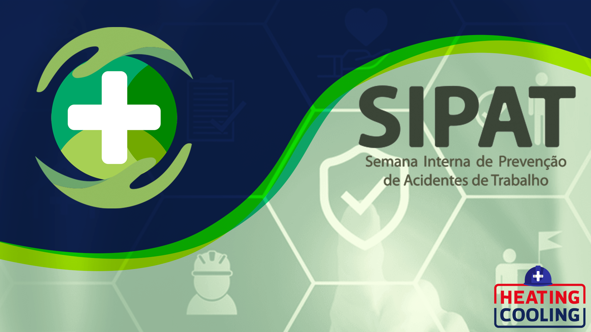
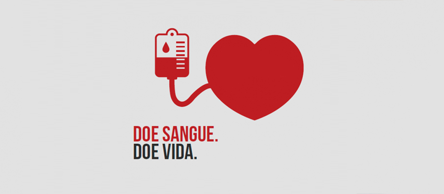

O que é SIPAT?
SIPAT é a Semana Interna de Prevenção de Acidentes de Trabalho. Nosso objetivo é levar a você colaborador a importância da prevenção de acidentes no ambiente de trabalho em harmonia com a legislação vigente. Este evento é realizado pela CIPA (Comissão Interna de Prevenção de Acidentes de Trabalho e Assedio), em conjunto ao comitê de Gestão de Pessoas com intuito de desenvolver as ações voltadas ao tema incorporados a nossas necessidades. Essa comissão é obrigatória em todas as empresas com mais de 20 colaboradores que, consequentemente, devem ter uma SIPAT todos os anos. Durante a programação desenvolvida pela CIPA, os empregados participam de diversas atividades, como palestras e treinamentos, sobre prevenção de acidentes de trabalho.

O que é Outubro Rosa?
O Outubro Rosa é uma campanha mundial realizada anualmente no mês de outubro, que busca a conscientização das mulheres sobre prevenção e diagnóstico precoce do câncer de mama, fatores que aumentam as chances de cura e reduzem a mortalidade. Simbolizada pelo laço rosa, a campanha mobiliza diversas instituições tanto públicas quanto privadas, para disponibilização de exames gratuitos ou com preço reduzido, a fim de encorajar as mulheres a fazê-los, para assim, tratarem de qualquer problema encontrado precocemente. Isso porque, nos estágios iniciais, o câncer de mama é assintomático e responde muito melhor aos tratamentos.

O que é Novembro Azul?
A campanha Novembro Azul tem como principal objetivo alertar para os altos índices do câncer de próstata. A doença, que é a segunda mais comum entre os homens, acomete aproximadamente 60 mil homens todos os anos apenas no Brasil. Anualmente, a campanha tem levado informações sobre diagnóstico, tratamento e cuidados necessários frente a esse cenário. Assim, a ideia é dar continuidade nos trabalhos e projetos de prevenção, conscientização e informação sobre a doença.

Doar Sangue?
Diariamente, muitas pessoas estão internadas por acidentes graves, tratamentos de câncer, cirurgias ou outras doenças, e necessitam receber transfusão de sangue. Convide seus amigos e familiares para doar sangue no Hemocentro Unifesp. Faça parte dessa corrente de solidariedade pela vida.

A importância de doar sangue
A doação de sangue é um ato nobre e solidário que desempenha um papel vital na saúde e na sobrevivência de inúmeras pessoas. Por meio da doação, os bancos de sangue podem fornecer transfusões sanguíneas a pacientes que enfrentam condições médicas graves ou submetidos a cirurgias complexas. É um procedimento simples e seguro, no qual uma pessoa voluntária doa uma pequena quantidade de sangue. Antes de ser disponibilizado para uso médico, o sangue doado é cuidadosamente testado para garantir que esteja livre de doenças transmissíveis. Estima-se que cada doação de sangue possa salvar até quatro vidas, o que destaca ainda mais o impacto desse gesto.